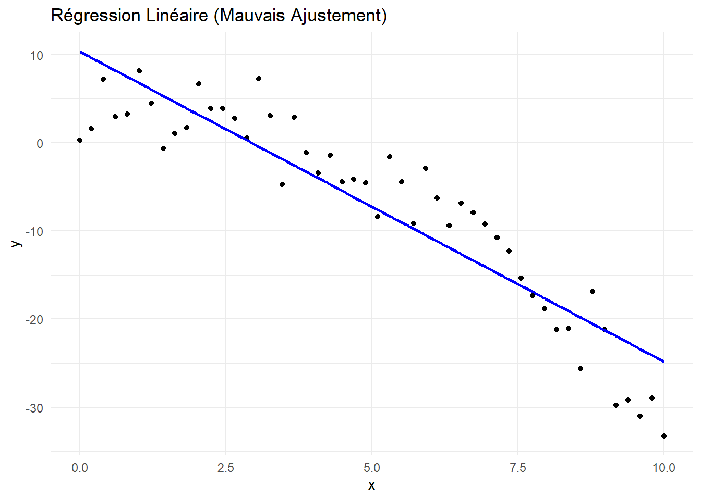

#Importer le jeu de donné
resto<-read.csv("C:/Users/Fatou/OneDrive - HEC Montréal/PROJET SUPERVISE/THEME 5/Restaurants.csv",sep=";", header=TRUE
)
resto$Emplacement<-as.factor(resto$Emplacement)Thème 5: La régréssion linéaire
0.1 Mise en situation 1
Au cours d’une enquête menée en 2001, un chercheur a demandé aux clients d’évaluer 168 restaurants Italiens situés à la ville de New York en fonction de trois aspects différents : la qualité de la nourriture, la décoration et le service. Les variables disponibles dans la base de données « Restaurants.sav » sont définies comme suit:
Variable
Nom: Nom du restaurant
Prix: Prix du diner incluant une boisson et le pourboire
Qualité: Score d’évaluation de la qualité de la nourriture sur une échelle de 0 à 30
Décor: Score d’évaluation de la décoration du restaurant sur une échelle de 0 à 30
Service: Score d’évaluation du service sur une échelle de 0 à 30
Emplacement:
1 : restaurant situé à l’Est de la cinquième avenue 0 : restaurant situé à l’Ouest de la cinquième avenue
0.2 Objectif
On s’intéresse, en règle générale, aux types de liens qui existent entre différentes variables.
Exemples
Existe t-il un lien entre le prix d’un repas et la qualité du restaurant?
La qualité a-t-elle un impact significatif sur le prix du repas?
Le prix varie-t-il en fonction de l’emplacement du restaurant?
Est-ce que le service, le décor, la qualité et l’emplacement ont un impact sur le prix d’un diner dans un restaurant italien?
Le type de variables et le nombre de variables impliquées dans les relations qui nous intéressent guident le choix de la méthode et de la direction de notre analyse.
0.3 Lien entre deux variables quantitatives (rappel)
Pour détecter, mesurer et interpréter un lien linéaire entre deux variables quantitatives, on commence, dans l’ordre, par:
Effectuer un diagnostic graphique (nuage de point /diagramme de dispersion/ scatterplot) pour détecter le mouvement conjoint dans la variation des deux variables.
Calculer le coefficient de corrélation linéaire observé dans l’échantillon.
Tester la significativité du lien linéaire entre les deux variables.
0.4 Diagnostic graphique:diagramme de dispersion
Un diagramme de dispersion permet:
de valider si une relation semble exister entre les variables ;
de visualiser le type de la relation (linéaire ou autre) ;
de vérifier s’il y a des valeurs qui diffèrent de la tendance (valeurs aberrantes ou extrêmes
Exemple 1: relation entre qualité et prix
# Charger la librairie ggplot2
library(ggplot2)
# Création du scatter plot: Qualité-Prix
ggplot(data = resto, aes(x = Qualité, y = Prix)) +
geom_point(shape = 1) + # Cercle vide
theme_minimal() + # Thème simple
labs(title = "Relation entre qualité et prix", x = "Qualité", y = "Prix") 0.5 Coefficient de corrélation de Pearson
Rappel: La corrélation (aussi appelée coefficient de corrélation de Pearson) mesure la force et la direction de la relation linéaire entre deux variables quantitatives sur une échelle allant de -1 à 1.
On dénote la corrélation observée dans l’échantillon par r (le coefficient de corrélation dans la population est noté par ρ ).
\[ r = \frac{\sum\limits_{i=1}^{n} (X_i - \overline{X})(Y_i - \overline{Y})} {\sqrt{\sum\limits_{i=1}^{n} (X_i - \overline{X})^2 \sum\limits_{i=1}^{n} (Y_i - \overline{Y})^2}} \]
Plus on est près des extrémités de l’échelle (-1 ou 1), plus l’intensité de la relation est forte. Un coefficient r = -1 : une parfaite relation négative.
Un coefficient r = 0 : il n’y a aucune relation linéaire entre les variables ou il y a une relation entre les deux variables mais le lien n’est pas linéaire.
Un coefficient r = 1 : une parfaite relation positive.
Attention r peut être influencé par la présence de valeurs extrêmes ou aberrantes d’où l’importance du diagnostique graphique.
0.6 Calcul du coefficient de corrélation de Pearson
\[ \textbf{Les hypothèses :} \]
\[ H_0 : \rho = 0 \quad \text{(Absence de relation linéaire)} \]
\[ H_1 : \rho \neq 0 \quad \text{(Présence d’une relation linéaire)} \]
# Calculer la matrice de corrélation de Pearson
cor_matrix <- cor(resto[, c("Prix", "Qualité", "Service", "Décor")], method = "pearson")
# Afficher la matrice de corrélation
print(cor_matrix) Prix Qualité Service Décor
Prix 1.0000000 0.6270435 0.6411402 0.7243525
Qualité 0.6270435 1.0000000 0.7945248 0.5039161
Service 0.6411402 0.7945248 1.0000000 0.6453306
Décor 0.7243525 0.5039161 0.6453306 1.00000000.6.1 Retour à l’exemple
# Créer le scatterplot: Qualité-Prix
ggplot(resto, aes(x = Qualité, y = Prix)) +
geom_point(shape = 1) +
geom_smooth(method = "lm", formula = y ~ x, color = "black") +
labs(x = "Qualité", y = "Prix", title = "Relation entre Qualité et Prix") +
theme_minimal()Les données observées nous permettent de détecter une dépendance linéaire assez forte et significative (au niveau 1%) entre la qualité des mets et le prix du repas.
Plus le score de qualité est élevé, plus les prix ont aussi tendance à être élevés. Cette tendance se confirme aussi par la valeur du coefficient de corrélation linéaire (r = 0,627)
Comment peut-on utiliser l’information fournie par les données observées pour « prédire » les prix d’un repas pour un restaurant italien donné?
Pour ce faire, on peut modéliser la relation observée entre les deux variables à l’aide d’une fonction.
0.7 Modele de regression lineaire
Le modèle de régression linéaire est:
\[ Y = \beta_0 + \beta_1 X_1 + \dots + \beta_k X_k + \varepsilon \]
Y = variable expliquée ou dépendante ou réponse
ùëã_1, ‚Ķ,ùëã_ùëò = variables explicatives ou ind√©pendantes (une seule dans le cas de la r√©gression simple, 2 ou plus pour la r√©gression multiple)
On dispose de n observations (X11 ,…, Xk1, Y1),(X12 ,…, Xk2,Y2), …,(X1n ,…, Xkn,Yn), sur ces variables.
Le terme ùùê est appel√© l‚Äôerreur du mod√®le.
L’erreur représente tous les autres facteurs ( omis dans l’équation) pouvant «expliquer» la valeur de Y.
Ce type de modèle est très souvent adéquat lorsque nous assumons que Ɛ est une variable aléatoire suivant une loi normale d’espérance 0 et d’écart-type σ_Ɛ .
Les paramètres du modèles sont estimés par la méthode des moindres carrés
Le mod√®le stipule qu‚Äôil existe une relation lin√©aire entre les variables explicatives (ùëã_1,‚Ķ,ùëã_ùëò) et la moyenne des Y correspondants et non pas directement entre les variables explicatives (ùëã_1,‚Ķ,ùëã_ùëò) et Y.
Par exemple, pour la régression linéaire simple:

0.8 Analyse de la variance
On peut décomposer la variabilité totale de Y en deux composantes :
Celle qui est expliquée par le modèle de régression
et celle qui ne l’est pas (variation résiduelle due à l’erreur).
\[ \sum (y_i - \bar{y})^2 = \sum (\hat{y_i} - \bar{y})^2 + \sum (y_i - \hat{y_i})^2 \]
\[ SS_C = SS_R + SS_e \]
Cette décomposition nous permet d’obtenir un tableau d’Anova à partir duquel on pourra développer un test permettant de vérifier si la régression est globalement significative pour expliquer la variabilité de Y (Test F).
Tableau d’analyse de la variance: cas général
| Source.de.la.variation | Somme.de.carrés | Degrés.de.liberté | Carré.moyen | F |
|---|---|---|---|---|
| Régression | SS_R | k | MSR = SS_R / k | F = MSR / MSE |
| Résiduelle (erreur) | SS_e | n - k - 1 | MSE = SS_e / (n-k-1) | |
| Totale | SS_C | n - 1 |
0.9 Validation du modèle
L’équation expérimentale (modèle ajusté) devient: \[ \hat{Y} = b_0 + b_1 X_1 + b_2 X_2 + \dots + b_k X_k \]
1-Test sur la significativité globale: (Test F du tableau d’ANOVA).
\[ H_0: \beta_1 = \beta_2 = \dots = \beta_p = 0 \quad \text{(Globalement, la régression n’est pas significative)} \]
\[ H_1: \text{au moins un de ces paramètres} \neq 0 \quad \text{(Globalement, la régression est significative)} \]
Si H0 est vraie, la statistique du test: F = \[ \frac{\frac{SSR}{n-1}}{\frac{SSE}{n-p-1}} \]
Si on rejette ùêª0, on en conclut que le Mod√®le est globalement significatif c.a.d qu‚Äôil existe au moins une variable X utile pour expliquer le comportement de Y.
2-Tests sur les contributions marginales individuelles (Tests T sur les coefficients).
Il y a autant de tests individuels que de variables dans le modèle
\[ H_0: \beta_i = 0 \quad \text{vs} \quad H_1: \beta_i \neq 0, \quad i = 1, \dots, k \]
En régression linéaire multiple, on test la contribution partielle de X_j sachant que les autres variables sont dans le modèle.
-Le non rejet de H0 veut dire qu‚Äôil n‚Äôy a pas de lien lin√©aire significatif entre ùëã_ùëó et Y une fois que l‚Äôon tient compte de toutes les autres variables dans le mod√®le.
-Le rejet de H0 veut dire que la variable ùëã_ùëó contribue √† expliquer Y au del√† des autres variables dans le mod√®le.
Interprétation des coefficients:
b0 : repr√©sente la moyenne de Y lorsque ùëã1=0, ùëã2=0 ‚Ķ ùëíùë° ùëãùëò=0, si cela a du sens.
bj : mesure l’effet marginal ou la contribution marginale de la variable Xj une fois que l’on tient compte des autres variables dans le modèle.
bj : s’interprète comme la variation de la moyenne de Y lorsque Xj augmente d’une unité, lorsque les autres variables demeurent inchangées.
0.10 Coefficient de determination ùëπ carr√©: mesure de performance du mod√®le
Le coefficient de détermination R2 mesure la proportion de la variabilité observée de Y qui est expliquée par la régression.
\[ R^2 = \frac{SS_R}{SS_C} \]
Ce coefficient peut servir à mesurer la performance du modèle comme outil de prévision.
R2 prend ses valeurs entre 0 et 1. Plus ce coefficient est grand, plus la relation linéaire est forte.
En régression linéaire simple, ce coefficient est simplement égal au carré du coefficient de corrélation de Pearson.
0.11 La statistique R carré ajusté
En régression linaire multiple, la performance du modèle ajusté est évalué par son coefficient de détermination R2.
Lorsque des variables indépendantes additionnelles sont ajoutées à un modèle, le R2 ne peut qu’augmenter ce qui laisse à croire, à tort, que plus il y a de variables dans le modèle mieux c’est.
La statistique R2 peut être gonflée artificiellement par l’ajout de n’importe quelle variable indépendante au modèle.
Si on veut donc comparer des modèles ne comportant pas le même nombre de variables explicatives, on utilisera une mesure qui pénalise l’ajout de prédicteurs. Cette mesure s’appelle le R2-ajusté.
\[ R^2 = \frac{SS_E}{SS_T} \]
\[ R^2ajusté = 1-(\frac{SS_E}{SS_T})(\frac{n-1}{n-p-1}) \]
0.12 Exercice 1
Estimez le modèle de régression linéaire simple pour expliquer le prix d’un repas dans un restaurant italien à New York par la variable qualité.
Donnez la droite de régression estimée.
Interprétez les estimés ponctuels et les intervalles de confiances des paramètres du modèle.
Une ordonnée à l’origine négative fait elle du sens dans ce contexte? Le modèle est-il globalement significatif?
Quelle est la valeur du ùëÖ^2? Interpr√©tez-en la valeur.
# Faire régression linéaire avec Qualité
modele_qualite <- lm(Prix ~ Qualité, data = resto)
# Résumé du modèle
summary(modele_qualite)
Call:
lm(formula = Prix ~ Qualité, data = resto)
Residuals:
Min 1Q Median 3Q Max
-21.8860 -3.9470 0.2056 4.2513 26.9919
Coefficients:
Estimate Std. Error t value Pr(>|t|)
(Intercept) -17.8321 5.8631 -3.041 0.00274 **
Qualité 2.9390 0.2834 10.371 < 2e-16 ***
---
Signif. codes: 0 '***' 0.001 '**' 0.01 '*' 0.05 '.' 0.1 ' ' 1
Residual standard error: 7.261 on 166 degrees of freedom
Multiple R-squared: 0.3932, Adjusted R-squared: 0.3895
F-statistic: 107.6 on 1 and 166 DF, p-value: < 2.2e-160.13 Intervalle de confiance pour estimer la moyenne conditionnelle et intervalle de prévision
La droite de régression estimée peut être utilisée pour :
Estimer la moyenne conditionnelle de Y pour une valeur de x fixée.
Prévoir la valeur de Y pour une nouvelle observation de x.
Pour le même x fixé, la valeur ŷ(x) fournit à la fois une estimation ponctuelle de la moyenne conditionnelle de Y et une prévision ponctuelle de la valeur de Y.
Cependant, la marge d’erreur associée à la prévision sera nécessairement plus grande que la marge d’erreur associée à l’estimation de la moyenne.
#Calculer l'intervalle de confiance des paramètres du modèle qualité
interval_conf <- confint(modele_qualite, level = 0.95)
print(interval_conf ) 2.5 % 97.5 %
(Intercept) -29.408044 -6.256253
Qualité 2.379464 3.498455#Calculer l'intervalle de confiance des prédictions
resto$BI <- predict(modele_qualite, interval = "confidence")[, "lwr"]
resto$BS <- predict(modele_qualite, interval = "confidence")[, "upr"]
head(resto) Nom Prix Qualité Décor Service Emplacement BI BS
1 Barbaresco 44 16 16 16 1 26.39240 31.99002
2 Ernie's 31 16 15 16 0 26.39240 31.99002
3 Il Vagabondo 36 17 14 17 1 29.83465 34.42569
4 Zucchero e Pomodori 29 17 14 15 1 29.83465 34.42569
5 Baraonda 37 17 18 15 1 29.83465 34.42569
6 Supreme Macaroni Co. 28 17 14 17 0 29.83465 34.42569Estimation ponctuelle et intervalle de confiance du prix moyen pour un restaurant ayant un score de qualité de 17:
Estimé du prix moyen= -17.832+2.94*17= 32.15$
Au niveau de confiance 95%, on estime que le prix moyen des restaurants ayant une score de qualité de 17 est situé entre 29.83$ et 34.42
Au niveau de confiance 95% on estime que le prix d’un restaurant ayant un score de qualité de 17 est entre 17.61$ et 46.65%.
0.14 Exercice 2
Ajustez différents modèles de régression linéaires simples en fonction des variables explicatives disponibles pour tenter d’expliquer le prix du repas dans les restaurants Italiens.
Pour chacun des modèles, présentez l’équation estimée et discutez de la significativité des coefficients.
Pour chacun des modèles, interprétez chaque coefficient estimé dans le contexte du problème.
Parmi ces modèles ajustés, lequel vous semble le plus approprié?
# Régression linéaire avec Décor
modele_decor <- lm(Prix ~ Décor, data = resto)
# Résumé du modèle
summary(modele_decor )
Call:
lm(formula = Prix ~ Décor, data = resto)
Residuals:
Min 1Q Median 3Q Max
-14.9578 -4.4862 -0.4673 4.0422 18.5138
Coefficients:
Estimate Std. Error t value Pr(>|t|)
(Intercept) -1.362 3.292 -0.414 0.68
Décor 2.490 0.184 13.537 <2e-16 ***
---
Signif. codes: 0 '***' 0.001 '**' 0.01 '*' 0.05 '.' 0.1 ' ' 1
Residual standard error: 6.426 on 166 degrees of freedom
Multiple R-squared: 0.5247, Adjusted R-squared: 0.5218
F-statistic: 183.2 on 1 and 166 DF, p-value: < 2.2e-16# Création du scatter plot Décor et Prix
ggplot(data = resto, aes(x = Décor, y = Prix)) +
geom_point(shape = 1) + # Cercle vide
theme_minimal() + # Thème simple
labs(title = "Relation entre décor et prix", x = "Décor", y = "Prix") # Régression linéaire avec Service
modele_service <- lm(Prix ~ Service, data = resto)
# Résumé du modèle
summary(modele_service )
Call:
lm(formula = Prix ~ Service, data = resto)
Residuals:
Min 1Q Median 3Q Max
-17.6646 -4.7540 -0.2093 4.3368 26.2460
Coefficients:
Estimate Std. Error t value Pr(>|t|)
(Intercept) -11.9778 5.1093 -2.344 0.0202 *
Service 2.8184 0.2618 10.764 <2e-16 ***
---
Signif. codes: 0 '***' 0.001 '**' 0.01 '*' 0.05 '.' 0.1 ' ' 1
Residual standard error: 7.153 on 166 degrees of freedom
Multiple R-squared: 0.4111, Adjusted R-squared: 0.4075
F-statistic: 115.9 on 1 and 166 DF, p-value: < 2.2e-16# Création du scatter plot Service et Orix
ggplot(data = resto, aes(x = Service, y = Prix)) +
geom_point(shape = 1) + # Cercle vide
theme_minimal() + # Thème simple
labs(title = "Relation entre service et prix", x = "Service", y = "Prix") # Régression linéaire avec Emplacemnet
modele_emplacement <- lm(Prix ~ Emplacement, data = resto)
# Résumé du modèle
summary(modele_emplacement )
Call:
lm(formula = Prix ~ Emplacement, data = resto)
Residuals:
Min 1Q Median 3Q Max
-25.0189 -7.0189 -0.0189 5.9811 24.5645
Coefficients:
Estimate Std. Error t value Pr(>|t|)
(Intercept) 40.435 1.163 34.770 <2e-16 ***
Emplacement1 3.583 1.464 2.448 0.0154 *
---
Signif. codes: 0 '***' 0.001 '**' 0.01 '*' 0.05 '.' 0.1 ' ' 1
Residual standard error: 9.157 on 166 degrees of freedom
Multiple R-squared: 0.03483, Adjusted R-squared: 0.02902
F-statistic: 5.991 on 1 and 166 DF, p-value: 0.01542# Création du scatter plot Emplacement et Prix
ggplot(data = resto, aes(x = Emplacement, y = Prix)) +
geom_point(shape = 1) + # Cercle vide
theme_minimal() + # Thème simple
labs(title = "Relation entre emplacement et prix", x = "Emplacement", y = "Prix") 0.15 Exercice 3
Estimez le modèle de régression linéaire multiple pour expliquer le prix d’un repas dans un restaurant italien à New York en utilisant toutes les variables disponibles.
Donnez la droite de régression estimée.
Interprétez les coefficients dans le contexte du problème.
Le modèle est-il globalement significatif?
Est-ce que toutes les variables contribuent significativement dans ce modèle multiple pour expliquer le prix d’un repas dans un restaurant italien à New York?
Quel pourcentage de la variabilité des prix d’un repas dans un restaurant italien à New York est expliquée par ce modèle?
0.16 Le modèle complet
# Création du modèle complet avec Qualité, Décor, Service et Emplacement
modele_complet_resto <- lm(Prix ~ Qualité + Décor + Service + Emplacement, data = resto)
# Résumé du modèle
summary(modele_complet_resto)
Call:
lm(formula = Prix ~ Qualité + Décor + Service + Emplacement,
data = resto)
Residuals:
Min 1Q Median 3Q Max
-14.0465 -3.8837 0.0373 3.3942 17.7491
Coefficients:
Estimate Std. Error t value Pr(>|t|)
(Intercept) -24.023800 4.708359 -5.102 9.24e-07 ***
Qualité 1.538120 0.368951 4.169 4.96e-05 ***
Décor 1.910087 0.217005 8.802 1.87e-15 ***
Service -0.002727 0.396232 -0.007 0.9945
Emplacement1 2.068050 0.946739 2.184 0.0304 *
---
Signif. codes: 0 '***' 0.001 '**' 0.01 '*' 0.05 '.' 0.1 ' ' 1
Residual standard error: 5.738 on 163 degrees of freedom
Multiple R-squared: 0.6279, Adjusted R-squared: 0.6187
F-statistic: 68.76 on 4 and 163 DF, p-value: < 2.2e-160.17 Regression avec variable service seulement
# Résumé du modèle Sercive
summary(modele_service)
Call:
lm(formula = Prix ~ Service, data = resto)
Residuals:
Min 1Q Median 3Q Max
-17.6646 -4.7540 -0.2093 4.3368 26.2460
Coefficients:
Estimate Std. Error t value Pr(>|t|)
(Intercept) -11.9778 5.1093 -2.344 0.0202 *
Service 2.8184 0.2618 10.764 <2e-16 ***
---
Signif. codes: 0 '***' 0.001 '**' 0.01 '*' 0.05 '.' 0.1 ' ' 1
Residual standard error: 7.153 on 166 degrees of freedom
Multiple R-squared: 0.4111, Adjusted R-squared: 0.4075
F-statistic: 115.9 on 1 and 166 DF, p-value: < 2.2e-16Il n’y a pas un lien linéaire significatif entre la variable service et le prix quand elle est seul
0.18 Regression avec variable Service,Qualité et Décor
# Création du modèle avec Service, Qualité,Décor
modele_service_qualite_decor <- lm(Prix ~ Service+ Qualité + Décor, data = resto)
# Résumé du modèle
summary(modele_service_qualite_decor)
Call:
lm(formula = Prix ~ Service + Qualité + Décor, data = resto)
Residuals:
Min 1Q Median 3Q Max
-14.8440 -3.7039 -0.1525 3.6218 19.0576
Coefficients:
Estimate Std. Error t value Pr(>|t|)
(Intercept) -24.6409 4.7536 -5.184 6.33e-07 ***
Service 0.1350 0.3957 0.341 0.733
Qualité 1.5556 0.3731 4.170 4.93e-05 ***
Décor 1.8473 0.2176 8.491 1.17e-14 ***
---
Signif. codes: 0 '***' 0.001 '**' 0.01 '*' 0.05 '.' 0.1 ' ' 1
Residual standard error: 5.803 on 164 degrees of freedom
Multiple R-squared: 0.617, Adjusted R-squared: 0.61
F-statistic: 88.06 on 3 and 164 DF, p-value: < 2.2e-16Il y a un lien linéaire significatif entre la variable service et le prix, mais cette variable ne contribue plus (p-value=0.733) à expliquez le prix une fois que l’on tient compte du décor et de la qualité.
0.19 Modélisation avec variables explicatives catégorielles
Rappel: En régression linéaire simple ou multiple, la variable dépendante Y doit être quantitative mais les prédicteurs (les variables indépendantes X) peuvent être de n’importe quel type: quantitatif, nominal, ordinal, binaire.
Variable binaire: Pour utiliser une variable binaire, il suffit de créer une variable indicatrice qui prend les valeurs 0 et 1 et l’inclure dans le modèle.
Variable nominale: Pour utiliser une variable nominale ayant k valeurs possibles, il suffit de créer (k – 1) variables indicatrices et de les inclure dans le modèle.
Variable ordinale: Selon la situation, une variable ordinale pourra être utilisée comme une variable quantitative, en l’ajoutant telle quelle au modèle, ou bien comme une variable catégorielle, en la modélisant à l’aide de variables indicatrices comme pour une variable nominale. Le choix dépendra de la variable elle-même et du nombre de modalités qu’elle possède.
0.20 Mise en situation 2
Une importante chaîne de magasins compte un très grand nombre de succursales réparties à travers le Canada et les États-Unis. La direction dispose de certaines données sur un échantillon de 342 succursales. Voici les variables étudiées :
Profit = Profit de l’année 2016 (en milliers de dollars). Notez qu’un profit négatif correspond à une perte.
Budget = Budget publicitaire de l’année 2016 (en milliers de dollars).
Local = Évaluation globale de la localisation de la succursale. Cette variable a été élaborée à partir de différents critères : la taille de la population vivant à proximité de la succursale, le revenu médian de cette population, l’accès par transport en commun, le nombre de places de stationnement disponibles, etc. Ces critères ont été mesurés et pondérés de façon à obtenir une cote globale entre 0 et 100, 100 étant la cote la plus élevée représentant une localisation excellente.
Direction = Indice de la qualité de la direction de la succursale : 1 = acceptable, 2 = bon et 3 = excellent.
Comp = Présence d’un compétiteur dans un rayon de 5 km : 0 = pas de compétiteur, 1 = présence d’un compétiteur
Loc_categ = Variable indicatrice obtenue à partir de la variable « Local ». 1= Si la succursale a une évaluation globale de 50 et plus; c.à.d. Local >= 50 et 0 = sinon.
# Importer le jeu de donné
magasins <- read.csv("C:/Users/Fatou/OneDrive - HEC Montréal/PROJET SUPERVISE/THEME 5/Magasins.csv",sep=";", header=TRUE)
magasins$Direction<-as.factor(magasins$Direction)
magasins$Comp<-as.factor(magasins$Comp)0.21 Exercice 4
Donnez le type de chaque variable dans la base de données.
Ajustez un modèle de régression linéaire multiple pour expliquer la variable Profit en utilisant uniquement les variables Budget et Direction (modèle 1). Interprétez les coefficients estimés obtenus.
Ajustez un modèle de régression linéaire multiple pour expliquer la variable Profit incluant toutes les variables dans le modèle (modèle 2). Interprétez les coefficients estimés obtenus.
Quelle variable explicative semble avoir l’impact le plus important sur le Profit dans le modèle 2?
| Variable...Type | Quantitative | Qualitative.nominale | Qualitative.ordinale |
|---|---|---|---|
| Profit | X | ||
| Budget | X | ||
| Local | X | ||
| Direction | X | ||
| Comp | X | ||
| Loc_categ | X |
0.22 Démarche et solution
La variable Direction est ordinale mais ne comporte que trois modalités, on va donc créer deux variables indicatrices pour deux des trois modalités). La catégorie omise sera notre catégorie de référence.
Les variables Comp et Loc_categ peuvent être introduites telles qu’elles dans le modèle (attention si on décide de choisir la variable locale dans le modèle, on n’utilise plus Loc_categ).
# Création des variables indicatrices
# On prend la catégorie "1" comme référence
#resto$Direction_2 <- ifelse(resto$Direction == 2, 1, 0)
#resto$Direction_3 <- ifelse(resto$Direction == 3, 1, 0)0.22.1 Exercice 4- Question2: modèle 1
# Création du modèle avec Budget, Direction
modele_magasin1 <- lm(Profit ~ Budget + Direction, data = magasins)
# Résumé du modèle
summary(modele_magasin1)
Call:
lm(formula = Profit ~ Budget + Direction, data = magasins)
Residuals:
Min 1Q Median 3Q Max
-226.79 -58.39 -14.58 40.88 323.58
Coefficients:
Estimate Std. Error t value Pr(>|t|)
(Intercept) -17.8348 19.2117 -0.928 0.353898
Budget 2.0269 0.2544 7.967 2.51e-14 ***
Direction2 28.0467 12.7187 2.205 0.028116 *
Direction3 49.7672 13.6513 3.646 0.000309 ***
---
Signif. codes: 0 '***' 0.001 '**' 0.01 '*' 0.05 '.' 0.1 ' ' 1
Residual standard error: 90.22 on 338 degrees of freedom
Multiple R-squared: 0.1779, Adjusted R-squared: 0.1706
F-statistic: 24.38 on 3 and 338 DF, p-value: 2.636e-14Le profit moyen estimé pour un magasin n’ayant aucun budget publicitaire (Budget=0) et une appréciation jugée « acceptable » du mode de direction (Direction=1; ie, Bon=0 et Excellent=0) est de -17.835 milliers de dollars.
0.22.2 Exercice 4- Question2: interprétion des coefficients
Budget: Toute chose étant égale par ailleurs (TCEPA), selon le modèle ajusté le profit moyen augmente en moyenne de 2.027$ pour chaque augmentation d’un dollar du budget publicitaire.
Direction: Introduite par le biais de deux variables indicatrices; Bon et Excellent
Excellent: On estime la différence moyenne de profit entre un magasin ayant un mode de gestion jugé « Excellent » et un magasin ayant un mode de gestion jugé « Acceptable » à 49 767 $ une fois que l’on contrôle pour le niveau du budget publicitaire (TCEPA).
Bon: On estime la différence moyenne de profit entre un magasin ayant un mode de gestion jugé « Bon » et un magasin ayant un mode de gestion jugé « Acceptable » à 28 047 $ une fois que l’on contrôle pour le niveau du budget publicitaire (TCEPA).
# Création du scatterplot Budget-Profit-Direction
ggplot(magasins, aes(x = Budget, y = Profit, color = Direction)) +
geom_point(alpha = 0.5) + # Ajout des points avec transparence
geom_smooth(method = "lm", se = FALSE, size = 1.2) + # Ajout des régressions
labs(x = "Budget", y = "Profit", title = "Relation entre Budget et Profit selon la Direction") +
theme_minimal() 
0.22.3 Exercice 4- Question 3: Modèle 2
# Création du modèle Budget,Direction,Local,Comp
modele_magasin2 <- lm(Profit ~ Budget + Direction + Local + Comp, data = magasins)
# Résumé du modèle
summary(modele_magasin2)
Call:
lm(formula = Profit ~ Budget + Direction + Local + Comp, data = magasins)
Residuals:
Min 1Q Median 3Q Max
-184.36 -56.37 -14.98 48.09 301.28
Coefficients:
Estimate Std. Error t value Pr(>|t|)
(Intercept) -38.0864 23.5819 -1.615 0.1072
Budget 2.1017 0.2429 8.651 < 2e-16 ***
Direction2 27.1729 12.1980 2.228 0.0266 *
Direction3 53.3997 13.0313 4.098 5.23e-05 ***
Local 0.4590 0.1932 2.375 0.0181 *
Comp1 -57.4070 10.2958 -5.576 5.07e-08 ***
---
Signif. codes: 0 '***' 0.001 '**' 0.01 '*' 0.05 '.' 0.1 ' ' 1
Residual standard error: 86.02 on 336 degrees of freedom
Multiple R-squared: 0.2572, Adjusted R-squared: 0.2461
F-statistic: 23.27 on 5 and 336 DF, p-value: < 2.2e-16Le profit moyen estimé pour un magasin, n’ayant aucun budget publicitaire (Budget=0), une localisation médiocre (Local=0), une appréciation du mode de direction jugée « acceptable » (Bon=0 et Excellent=0) et sans compétiteur dans un rayon de 5km, a (-38 086 $).
Mise en garde: si une des variables indicatrices s’avère significative et pas les autres, il serait dangereux d’exclure les variables indicatrices non significatives associée aux modalités de la variable qualitative recodée parce que l’interprétation des bêtas en sera altérée.
0.22.4 Exercice 4 -Question 4: Comparaison des effets
Comme la taille de chaque param√®tre estim√© ùëè_ùëñd√©pend de l‚Äôunit√© associ√©e √† la variable ùëã_ùëñ, les coefficients estim√©s ne sont donc pas comparables (si les unit√©s de mesures sont diff√©rentes d‚Äôune variable √† une autre).
La variable budget est exprimée en dollars, la localisation est un score allant de 0 à 100, la variable Comp est une indicatrice sans unité…
On peut egalemenent chercher les coefficients standardise Beta dans R
NB: une variable standardisée s’obtient en retranchant de la variable d’origine sa moyenne et en la divisant pas son écart type.
Interprétation d’un coefficient standardisé: l’augmentation de Y, en moyenne, lorsque la variable explicative augmente de un écart type si le tout demeure constant.
# Installer et charger le package lm.beta
install.packages("lm.beta", repos = "https://cloud.r-project.org/")le package 'lm.beta' a été décompressé et les sommes MD5 ont été vérifiées avec succés
Les packages binaires téléchargés sont dans
C:\Users\Fatou\AppData\Local\Temp\RtmpMzIVUp\downloaded_packageslibrary(lm.beta)
# Obtenir les coefficients standardisés
modele_standardise_magasin2 <- lm.beta(modele_magasin2)
summary(modele_standardise_magasin2)
Call:
lm(formula = Profit ~ Budget + Direction + Local + Comp, data = magasins)
Residuals:
Min 1Q Median 3Q Max
-184.36 -56.37 -14.98 48.09 301.28
Coefficients:
Estimate Standardized Std. Error t value Pr(>|t|)
(Intercept) -38.0864 NA 23.5819 -1.615 0.1072
Budget 2.1017 0.4088 0.2429 8.651 < 2e-16 ***
Direction2 27.1729 0.1371 12.1980 2.228 0.0266 *
Direction3 53.3997 0.2509 13.0313 4.098 5.23e-05 ***
Local 0.4590 0.1124 0.1932 2.375 0.0181 *
Comp1 -57.4070 -0.2640 10.2958 -5.576 5.07e-08 ***
---
Signif. codes: 0 '***' 0.001 '**' 0.01 '*' 0.05 '.' 0.1 ' ' 1
Residual standard error: 86.02 on 336 degrees of freedom
Multiple R-squared: 0.2572, Adjusted R-squared: 0.2461
F-statistic: 23.27 on 5 and 336 DF, p-value: < 2.2e-160.23 Test de significativité globale pour un sous ensemble de variable
Quand des variables qualitatives comportent plusieurs modalités (k), il est possible de tester l’effet global de la variable avant de la transformer en (k-1)variables indicatrices en utilisant un modèle linéaire dans R avec la fonction lm(). On applique ensuite un test ANOVA de type III sur le modele pour la significativite global des variables
Exemple si l’effet de la variable Direction s’avère significatif au-delà du Budget, on procède par la suite à la création de variables indicatrices pour les inclure au modèle.
#Test ANOVA sur modele_magasin2
Anova_magasin2<-aov(modele_magasin2,type="III")0.24 Modèle hiérarchique ou régression séquentielle
« Le terme « régression hiérarchique » fait référence à la situation où le chercheur décide d’ajuster des modèles emboîtés en entrant tour à tour des blocs de variables dans le modèle et ce, afin de tester des hypothèses de recherche spécifiques. Souvent, les variables formant le premier bloc sont les variables de contrôle. Les variables des blocs suivants sont alors souvent les variables d’intérêt. » Citation tirée du recueil Techniques Quantitatives en marketing de Denis Larocque
Exemples
1) Tester globalement l’effet du mode de gestion (Direction) lorsqu’on tient compte du Budget publicitaire.
Premier Bloc: variables de contrôle: Budget Deuxième Bloc: variables d’intérêt: Direction (introduite par l’entremise de deux variables indicatrices)
2) Est-ce que la variable localisation reste significative une fois que l’on contrôle pour le budget publicitaire, le mode de gestion et la présence ou non de compétiteurs?
Premier Bloc: variables de contrôle: Budget, Direction (introduite par l’entremise de deux variables indicatrices) et Comp Deuxième Bloc: variables d’intérêt: Local
Le Sig.F change (p-value=0.01) permet de répondre au test d’hypothèse relatif à un sous ensemble de paramètres dans le modèle (à ne pas confondre avec le test de significativité globale de tous les paramètres du modèle):
ùëØùüé: ùú∑_ùíÜùíôùíÑùíÜùíçùíçùíÜùíèùíï=ùú∑_ùíÉùíêùíè=ùüé (aucun changement significatif suite √† l‚Äôajout de la variable Direction: augmentation marginale non significative de ùëÖ carr√© )
Hùüé:ùíäùíç ùíö ùíÇ ùíÇùíñ ùíéùíêùíäùíèùíî ùíñùíè ùë©ùíÜùíïùíÇ ‚â†ùüé (la variable direction est significative une fois que l‚Äôon tient compte du budget: augmentation marginale significative de ùëÖ carr√©)
# Création du modèle avec Budget
modele_budget <- lm(Profit ~ Budget , data = magasins)
summary(modele_budget)
Call:
lm(formula = Profit ~ Budget, data = magasins)
Residuals:
Min 1Q Median 3Q Max
-225.24 -61.93 -15.06 46.22 321.78
Coefficients:
Estimate Std. Error t value Pr(>|t|)
(Intercept) 14.9601 16.3193 0.917 0.36
Budget 1.9613 0.2578 7.609 2.74e-13 ***
---
Signif. codes: 0 '***' 0.001 '**' 0.01 '*' 0.05 '.' 0.1 ' ' 1
Residual standard error: 91.71 on 340 degrees of freedom
Multiple R-squared: 0.1455, Adjusted R-squared: 0.143
F-statistic: 57.9 on 1 and 340 DF, p-value: 2.741e-13# Création du modèle avec Budget et Direction
modele_budget_direction <- lm(Profit ~ Budget + Direction, data = magasins)
# Résumé du modèle
summary(modele_budget_direction)
Call:
lm(formula = Profit ~ Budget + Direction, data = magasins)
Residuals:
Min 1Q Median 3Q Max
-226.79 -58.39 -14.58 40.88 323.58
Coefficients:
Estimate Std. Error t value Pr(>|t|)
(Intercept) -17.8348 19.2117 -0.928 0.353898
Budget 2.0269 0.2544 7.967 2.51e-14 ***
Direction2 28.0467 12.7187 2.205 0.028116 *
Direction3 49.7672 13.6513 3.646 0.000309 ***
---
Signif. codes: 0 '***' 0.001 '**' 0.01 '*' 0.05 '.' 0.1 ' ' 1
Residual standard error: 90.22 on 338 degrees of freedom
Multiple R-squared: 0.1779, Adjusted R-squared: 0.1706
F-statistic: 24.38 on 3 and 338 DF, p-value: 2.636e-14#Test ANOVA sur les modele précedent
Anova_budget<-aov(modele_budget)
Anova_budget_direction<-aov(modele_budget_direction)
#Afficher les résultat
Anova_budgetCall:
aov(formula = modele_budget)
Terms:
Budget Residuals
Sum of Squares 486991.6 2859902.2
Deg. of Freedom 1 340
Residual standard error: 91.71411
Estimated effects may be unbalancedAnova_budget_directionCall:
aov(formula = modele_budget_direction)
Terms:
Budget Direction Residuals
Sum of Squares 486991.6 108403.1 2751499.2
Deg. of Freedom 1 2 338
Residual standard error: 90.22489
Estimated effects may be unbalancedEst-ce que la variable localisation reste significative une fois que l’on contrôle pour le budget publicitaire, le mode de gestion et la présence ou non de compétiteurs?
0.25 Méthodes de sélection de modèles (Forward)
Sélection pas à pas en ajoutant une variable à la fois, en commençant par la plus significative (stepwise, forward)
# Modèle avec toutes les variables
model_magasin_complet <- lm(Profit ~ ., data = magasins)
# Régression avec sélection foward
foward_model <- step(model_magasin_complet, direction = "forward")Start: AIC=3054.76
Profit ~ Budget + Local + Direction + Comp + Loc_categ## Résumé du modèle
foward_model
Call:
lm(formula = Profit ~ Budget + Local + Direction + Comp + Loc_categ,
data = magasins)
Coefficients:
(Intercept) Budget Local Direction2 Direction3 Comp1
-38.5550 2.1072 0.5305 26.8041 53.1432 -57.5167
Loc_categ
-5.6567 0.26 Méthodes de sélection de modèles (Backward)
Sélection à partir du modèle dans lequel toutes les variables sont incluses et en éliminant une variable à la fois en commençant par la moins significative (backward).
# Modèle avec toutes les variables
model_magasin_complet <- lm(Profit ~ ., data = magasins)
# Régression avec sélection backward
backward_model <- step(model_magasin_complet, direction = "backward")Start: AIC=3054.76
Profit ~ Budget + Local + Direction + Comp + Loc_categ
Df Sum of Sq RSS AIC
- Loc_categ 1 695 2486072 3052.9
<none> 2485377 3054.8
- Local 1 22662 2508040 3055.9
- Direction 2 124633 2610010 3067.5
- Comp 1 230629 2716006 3083.1
- Budget 1 553650 3039027 3121.6
Step: AIC=3052.86
Profit ~ Budget + Local + Direction + Comp
Df Sum of Sq RSS AIC
<none> 2486072 3052.9
- Local 1 41747 2527819 3056.6
- Direction 2 126020 2612091 3065.8
- Comp 1 230028 2716100 3081.1
- Budget 1 553761 3039832 3119.6#Afficher le modèle
backward_model
Call:
lm(formula = Profit ~ Budget + Local + Direction + Comp, data = magasins)
Coefficients:
(Intercept) Budget Local Direction2 Direction3 Comp1
-38.086 2.102 0.459 27.173 53.400 -57.407 0.27 Sélection du meilleur modèle selon un critère
Construire tous les modèles possibles et choisir le meilleur sous-ensemble de variables selon un certain critère spécifique (ex: R2-ajusté).
Si on a K pr√©dicteurs, on peut construire (2^ùëò‚àí1 ) mod√®les √† comparer.
Plus k est grand, plus il devient difficile de procéder ainsi.
Exemple
On dispose de 3 variables explicatives pour ajuster un modèle de régression linéaire. On peut ajuster donc 7 modèles différents et les comparer entre eux selon le R2-ajusté.
| Modèles | R2.ajusté |
|---|---|
| Avec X1 | |
| Avec X2 | |
| Avec X3 | |
| Avec X1 et X2 | |
| Avec X1 et X3 | |
| Avec X2 et X3 | |
| Avec X1, X2 et X3 |
0.28 Interaction
Il y a interaction entre deux variables explicatives ùëã_ùëñ et ùëã_ùëó si l‚Äôeffet d‚Äôune de ces variables sur les variations de Y n‚Äôest pas le m√™me selon la valeur de l‚Äôautre variable et vice versa.
Il y a une interaction entre deux variables lorsque l’effet entre les deux variables est multiplicatif et pas uniquement additif.
l’interaction entre les deux variables Xi et Xj se fait via la création d’une nouvelle variable égale au produit des deux.
On ajoute ensuite au mod√®le le produit (Xi * Xj ) en plus des variables explicatives ùëã_ùëñ et ùëã_ùëó.
On teste le paramètre associé à l’interaction pour évaluer sa significativité.
Remarque: Le choix des termes d’interaction à inclure dans le modèle se fait si on soupçonne un effet multiplicatif entre les variables.
0.29 Exemple pour illustrer l’interaction
On soupçonne que l’effet du budget sur le profit n’est pas le même selon que l’on soit dans une zone où les compétiteurs y sont ou pas.
Pour répondre à cette hypothèse, on va ajuster un modèle de régression linéaire multiple pour expliquer le profit en fonction du budget publicitaire, de comp et d’une variable d’intéraction budget_comp= Budget*comp.
# Création du modèle avec Budget, Comp, Budget*Comp
modele_magasin3 <- lm(Profit ~ Budget + Comp + Budget*Comp, data = magasins)
# Résumé du modèle
summary(modele_magasin3)
Call:
lm(formula = Profit ~ Budget + Comp + Budget * Comp, data = magasins)
Residuals:
Min 1Q Median 3Q Max
-180.57 -58.37 -11.26 48.66 307.96
Coefficients:
Estimate Std. Error t value Pr(>|t|)
(Intercept) 22.5274 18.4977 1.218 0.224
Budget 2.1003 0.2941 7.142 5.68e-12 ***
Comp1 -34.9596 35.3004 -0.990 0.323
Budget:Comp1 -0.3190 0.5524 -0.577 0.564
---
Signif. codes: 0 '***' 0.001 '**' 0.01 '*' 0.05 '.' 0.1 ' ' 1
Residual standard error: 88.51 on 338 degrees of freedom
Multiple R-squared: 0.2088, Adjusted R-squared: 0.2018
F-statistic: 29.73 on 3 and 338 DF, p-value: < 2.2e-16Le mod√®le ajust√© est : ùë¶ ÃÇ=22.527+2.1*Budget−34.96*Comp‚àíùüé.ùüëùüèùüó*(budget*comp)
Il est plus facile d’interpréter ce modèle selon la variable Comp:
Profit (comp=0)=22.527+2.1∗budget
Profit (comp=1)=(22.527−34.960)+(2.1−0.319)∗budget
Dans cet exemple:
l’ordonnée à l’origine (comp=1) n’est pas significativement différente de celle de (comp=0) (p-value=0.323).
l’effet du budget est le même peut importe se situe le magasin (p-value=0.564).
# Création du scatterplot Budget-Profit-Comp
ggplot(magasins, aes(x = Budget, y = Profit, color = Comp)) +
geom_point(alpha = 0.5) + # Ajout des points avec transparence
geom_smooth(method = "lm", se = FALSE, size = 1.2) + # Ajout des régressions
labs(x = "Budget", y = "Profit", title = "Relation entre Budget et Profit selon la Competition") +
theme_minimal() 0.30 Multicolinéarité
Si le seul but de la régression est de déterminer un modèle pour faire de la prévision, la multicolinéarité n’est pas si grave, mais si l’objectif est de construire un modèle explicatif (parcimonieux) pour analyser le comportement de Y en fonction des variables explicatives pertinentes, alors le problème est plus grave car les estimations des paramètres est moins précise (écart type élevé).
Si deux variables explicatives sont fortement corr√©l√©es (|ùíì|>ùüé.ùüñ), alors on peut se d√©barrasser de l‚Äôune de ces deux variables.
Le diagnostic de la multicolinéarité par le biais du coefficient de corrélation bivarié (deux par deux) n’est pas suffisant car plusieurs variables explicatives peuvent être très corrélées à une combinaison linéaire des autres variables explicatives.
Par exemple les variables Qualit√© et Decor sont respectivemnet fortemnet (|ùíì|=0,795) et moderement (|ùíì|=0-,645) correle avec la variable Service. (voir tableau de correlation plus haut)
0.31 Diagnostic de la multicolinéarité
Le « Variance inflation factor » noté VIF
Pour une variable explicative donnée Xi, \[ VIF(i) = \frac{1}{1 - R^2(i)} \]
ùëú√π ùëÖ carr√© (ùëñ) est le coeff de determination du mod√®le ajust√© en regressant X_i en fonction de toutes les autres variables explicatives.
Règle générale un VIF > 10 signale un problème de multicolinéarité.
Exemple: Un VIF=5 implique un ùëÖ carr√© (ùëñ)= 0.8. 80% de la variabilit√© observ√©e dans ùëã_ùëñ est expliqu√©e par les autres variables explicatives.
# Charger la bibliothèque car
library(car)
# Calculer le VIF des variables du modèle
vif(modele_complet_resto) Qualité Décor Service Emplacement
2.714261 1.744851 3.558735 1.064985 On ne détecte pas de problème de multicolinéarité dans notre exemple car les VIF<10.
0.32 Validité du modèle de régression linéaire
La validité du modèle de régression linéaire repose sur 4 hypothèses:
Hypothèse 1 : Les erreurs ɛi sont de moyenne nulle (condition de linéarité du modèle);
Hypothèse 2 : La variance des erreurs reste constante;
Hypothèse 3 : Les erreurs ɛi sont indépendantes (méthodes d’échantillonnage);
Hypothèse 4 : Les erreurs ɛi sont distribuées selon une loi Normale (plus l’échantillon est « grand », moins cette condition est importante);
On limitera notre analyse des résidus (hypothèses 1,2 et 4), dans le cadre de ce cours, à un examen graphique de la distribution des erreurs standardisées en fonction des variables explicatives.
0.33 Étapes pour valider le modele
Modèle
Profit=-38.086+2.102*Budget-57.407*Comp+0.459*Local+27.173 *Bon+53.4*Excellent
Première étape: calculer les erreurs standardisées.
# Standardiser les prédictions
magasins$valeurs_predites_std <- scale(predict(modele_magasin2))
# Standardiser les résidus
magasins$residus_std <- rstandard(modele_magasin2)Deuxième étape: Construire les graphiques des résidus en fonction des variables explicatives.
Si X est continue ->Scatterplot (nuage de points)
Si X est catégérielle ->Boxplot par modalité(groupe)
Les points doivent être disposés aléatoirement dans le graphique (aucun pattern anormal).
Troisième étape: construire l’histogramme des résidus standardisés:
la forme de l’histogramme doit se rapprocher d’une distribution normale autour d’une moyenne de 0 et d’écart type d’environ 1.
95% des résidus standardisés doivent être situés à [-2; 2] (règle empirique d’une distribution normale)
Exemple: Validation avec variable Budget
# Création du scatterplot Budget-residus
ggplot(magasins, aes(x = Budget, y = residus_std)) +
geom_point(alpha = 0.5) +
geom_smooth(method = "lm", se = FALSE, size = 1.2) +
labs(x = "Budget", y = "Résidus standardisés", title = "Graphique des résidus standardisés") +
theme_minimal() Exemple: Validation avec variable Direction
# Création du scatterplot Direction-residus
ggplot(magasins, aes(x = Direction, y = residus_std)) +
geom_boxplot() + # Boxplot des résidus
geom_hline(yintercept = median(magasins$residus_std), linetype = "solid", color = "blue", size = 1.2) +
labs(x = "Direction", y = "Résidus standardisés", title = "Graphique des résidus standardisés") +
theme_minimal() Exemple: Validation avec l’histogramme des erreurs
# Tracer l'histogramme des résidus standardisés
ggplot(magasins, aes(x = residus_std)) +
geom_histogram(aes(y = ..density..),
bins = 30,
fill = "khaki",
color = "black",
alpha = 0.7) +
geom_density(color = "black", size = 1) + # Ajout de la courbe de densité
labs(title = "Distribution des résidus standardisés",
x = "Résidus standardisés",
y = "Densité") +
theme_minimal()Conclusion
Rien ne semble indiquer une violation aux hypothèses sur lesquelles repose le modèle de régression linéaire.
Si les hypothèses ne sont pas vérifier, pensez à transformer soit la variables dépendantes et/ou les variables indépendantes pour s’approcher de l’hypothèse de linéarité.
0.34 Transformation
Exemple:
Le fichier (fictif) epicerie.csv contient les informations suivantes sur 100 000 adultes vivant seuls et détenant une carte fidélité du supermarché :
Dépense : Le montant dépensé annuellement dans ce supermarché.
Revenu : Le revenu annuel net avant impôt de ce client.
#Importer le jeu de donné
epicerie <- read.csv("C:/Users/Fatou/OneDrive - HEC Montréal/PROJET SUPERVISE/THEME 5/epicerie.csv",sep=";", header=TRUE)
epicerie$log_revenu <- as.numeric(gsub(",", ".", epicerie$log_revenu))En utilisant R, trouvez un bon modèle permettant de prévoir les dépenses à partir du revenu.
# Création du scatterplot Revenu-Dépenses
ggplot(epicerie, aes(x = Revenu, y = Dépenses)) +
geom_point(alpha = 0.5) +
labs(x = "Revenu", y = "Dépenses", title = "Relation entre Revenu et Dépenses") +
theme_minimal() #Modele avec Revenu
modele_epicerie_revenue<- lm(Dépenses~Revenu, data=epicerie)
summary(modele_epicerie_revenue)
Call:
lm(formula = Dépenses ~ Revenu, data = epicerie)
Residuals:
Min 1Q Median 3Q Max
-3803.6 -361.4 46.1 422.0 2243.5
Coefficients:
Estimate Std. Error t value Pr(>|t|)
(Intercept) 4.914e+03 5.426e+00 905.6 <2e-16 ***
Revenu 4.420e-02 7.641e-05 578.5 <2e-16 ***
---
Signif. codes: 0 '***' 0.001 '**' 0.01 '*' 0.05 '.' 0.1 ' ' 1
Residual standard error: 636.4 on 99998 degrees of freedom
Multiple R-squared: 0.7699, Adjusted R-squared: 0.7699
F-statistic: 3.346e+05 on 1 and 99998 DF, p-value: < 2.2e-16# Création du scatterplot log_revenu- Dépenses
ggplot(epicerie, aes(x = log_revenu, y = Dépenses)) +
geom_point(alpha = 0.5) +
labs(x = "log_revenu", y = "Dépenses", title = "Relation entre log_revenu et Dépenses") +
theme_minimal() #Modele avec log_Revenu
modele_epicerie_log_revenue<- lm(Dépenses~log_revenu, data=epicerie)
summary(modele_epicerie_log_revenue)
Call:
lm(formula = Dépenses ~ log_revenu, data = epicerie)
Residuals:
Min 1Q Median 3Q Max
-2256.5 -337.2 1.1 337.8 2107.8
Coefficients:
Estimate Std. Error t value Pr(>|t|)
(Intercept) -22983.496 39.726 -578.6 <2e-16 ***
log_revenu 2798.607 3.605 776.2 <2e-16 ***
---
Signif. codes: 0 '***' 0.001 '**' 0.01 '*' 0.05 '.' 0.1 ' ' 1
Residual standard error: 500.5 on 99998 degrees of freedom
Multiple R-squared: 0.8577, Adjusted R-squared: 0.8577
F-statistic: 6.025e+05 on 1 and 99998 DF, p-value: < 2.2e-160.35 Ajout de termes polynomiaux
Une droite peut ne pas être adéquate pour modéliser la relation entre X et Y. L’utilisation de termes polynomiaux d’ordre 2 ou 3 peut améliorer la performance d’un modèle.
L’interprétation de ces termes demeure un défi. C’est la raison pour laquelle ce genre de manipulation est plus utilisé pour la construction de modèle prédictif.
